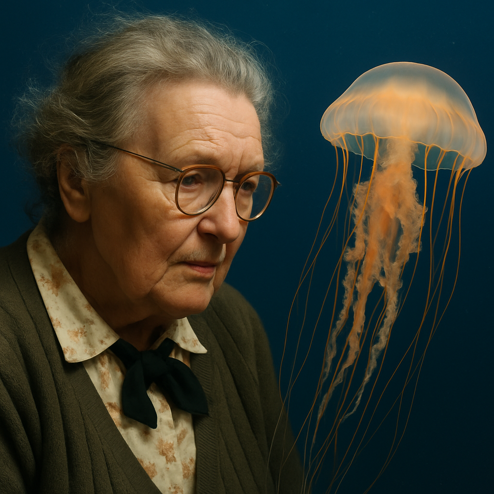
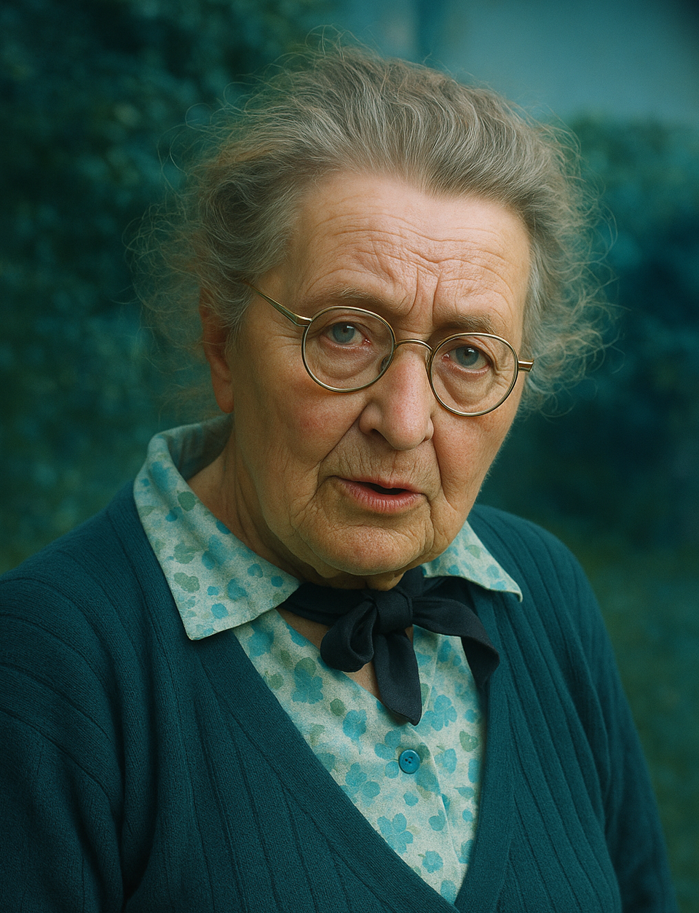

ଳ Pionera en criar medusas

Maude Jane Delap (1866-1953)
Desde su casa en Irlanda, se convirtió en la primera persona en criar medusas con éxito en cautiverio. Gracias a sus experimentos, descubrió fases cruciales del ciclo de vida de estos animales, contribuyendo significativamente al conocimiento científico.
A pesar de sus logros, nunca fue formalmente reconocida en su tiempo: era una mujer sin formación académica oficial en una época donde la ciencia estaba dominada por hombres. Rechazó una oferta del prestigioso Laboratorio Marítimo de Plymouth para quedarse en su isla natal, lo que también limitó su visibilidad profesional.